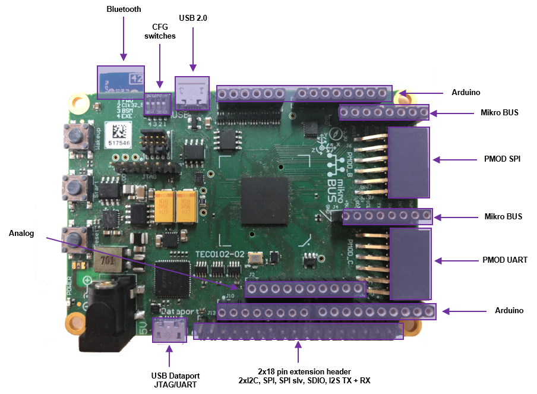
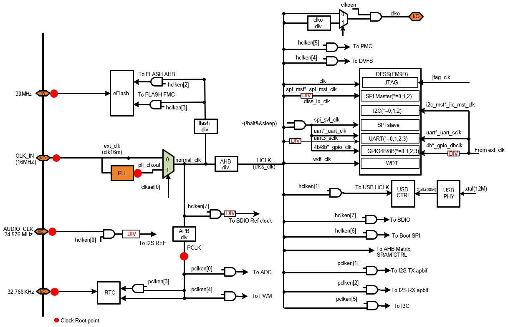
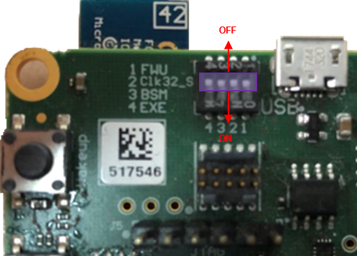
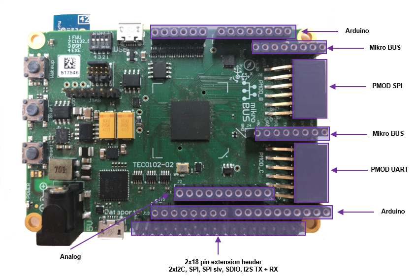
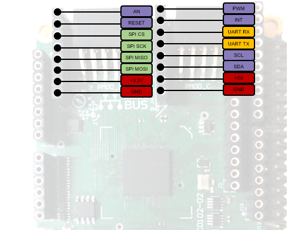
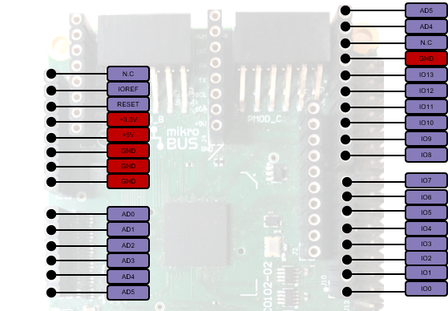
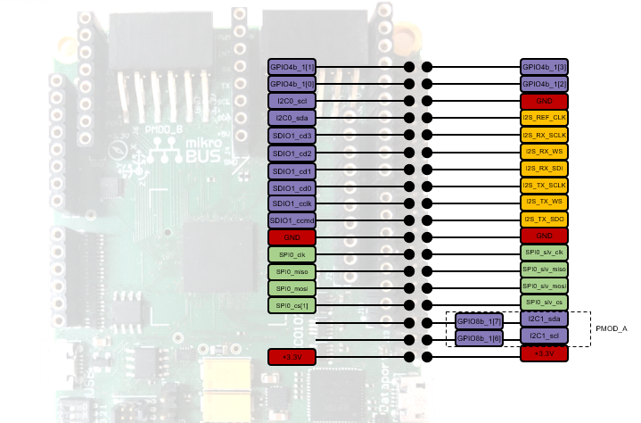

ARC IoT Development Kit¶
The ARC IoT Development Kit (IoTDK) Platform supports the DesignWare ARC Data Fusion IP Subsystem (DFSS). The DesignWare ARC DFSS is a complete, pre-verified, hardware and software solution optimized for a wide range of ultra-low power IoT applications. It is designed for fast and easy integration within a larger system context, including ARC EM9D, an extensive collection of I/O functions and fast math (trigonometric) accelerator.
See also this URL for details about the board: The ARC IoT Development Kit (IoTDK)
Components:¶
- ARC IoT ASIC:
EM9D based Data Fusion subsystem
USB 2.0 OTG, 2x SDIO
eFLASH(256 KB), SRAM(128 KB)
Several APB Peripherals
- Memory / Storage:
2x SPI Flash(2 MB)
- Interfaces
USB2.0 OTG
USB Data port (JTAG/UART)
Micro SD Card
9D Sensor (Invensense MPU-9250)
BTLE module (Microchip RN-4020)
ADC (16 channels)
JTAG
PMIC with dynamic voltage control
- Extensions
Arduino Interface headers (UNO R3 compatible)
mikroBUS headers
PMOD Interfaces (2x) - PMOD_B (support GPIO and SPI) - PMOD_C (support GPIO and UART)
Extension header (2x 18 pin)
Features:¶
- DesignWare ARC Data Fusion Subsystem
- EM9D Core @ 144 MHz
FPU
256 kByte ICCM
128 kByte DCCM
32 kByte X memory
32 kByte Y memory
Memory Protection Unit
DMA controller
DSP accelerator functions
- Advanced power management
DFS
Clock and voltage switching. On-chip voltage switches for digital core logic supplies
Off-chip voltage switches for all other supplies and DFSS tightly coupled peripherals
4 x UART
3 x SPI master
1 x SPI slave
3 x I2C master
44 bit GPIO (4 x 8-bit + 3 x 4-bit)
128 kByte SRAM
256 kByte eFLASH (50 MHz read operation)
2 Mbyte Boot SPI
Real Time Clock (RTC) running at reference clock of 32.678 kHz
I2S TX/RX interface
SDIO interface (2x)
USB 2.0 OTG interface
JTAG interface for debug
- PWM interface
6 PWM channels
2 PWM timers (1 timer for channel 1/2/3 and 1 timer for channel 4/5/6)
ADC interface, 16-channel single-ended 12-bit ADC
Clocks¶
The ARC IoT ASIC uses a single 16MHz reference clock from which all the main system clocks are generated. The clock generation is centralized in the SYSCONFIG module. The SYSCONFIG module implements a single PLL and integer dividers which allows for accurate fine-tuning of the system clocks to the desired frequency.
Configuration switches¶
The “On” and “Off” position for all four switches are depicted in the figure above, please see details below for function of each switch:
- FWU switch (This switch is used for Firmware Updates)
The “off” setting ensures that the EM9D Core starts executing the U-Boot bootloader stored in the embedded FLASH. Setting this switch in the “on” position is only required if the U-Boot bootloader residing in the embedded FLASH needs to be updated.
- Clk32_S switch (This switch is used to select the 32.768 KHz clock source)
The “off” setting selects the on-board 32.768 KHz Oscillator. The “on” setting selects the 32.768 KHz Crystal (and corresponding Xtal I/O Pads).
- BSM switch (This switch controls manual or automatic booting of the ARC IoTDK)
The “off” position indicates Manual mode: the ARC IoTDK only starts booting after the START button is pushed. This is the default setting The “on” position selects Automatic mode: the ARC IoTDK automatically starts booting after Reset.
- EXE switch (This switch controls if the EM9D Core continues with EXEcution or jumps into HALT mode)
The “off” position selects EXEcution mode. The “on” position select HALT mode. In case the EM9D continues in EXEcution mode, depending on the FWU switch setting, the Core either continues execution of the U-Boot bootloader or starts executing the Firmware Update procedure.
Extension Interfaces¶
To bring your application context around the ARC IoTDK, the following peripheral module standards are supported:
Digilent PMOD™ (2x)
The ARC IoTDK features two 12-pin PMOD connectors PMOD_B and PMOD_C. The functionality of the PMOD connectors is programmable and includes GPIO and SPI for PMOD_B and GPIO and UART for PMOD_C. After a reset, all ports are configured as GPIO inputs. The location of the pins on the PMOD connectors is shown:

POMD_B |
POMD_C |
||||
|---|---|---|---|---|---|
Pin |
GPIO |
SPI |
Pin |
GPIO |
UART |
B1 |
gpio8b_0[0] |
SPI1_CS_N[0] |
C1 |
gpio8b_1[0] |
UART1_CTS |
B2 |
gpio8b_0[1] |
SPI1_MOSI |
C2 |
gpio8b_1[1] |
UART1_TXD |
B3 |
gpio8b_0[2] |
SPI1_MISO |
C3 |
gpio8b_1[2] |
UART1_RXD |
B4 |
gpio8b_0[3] |
SPI1_CLK |
C4 |
gpio8b_1[3] |
UART1_RTS |
B5 |
GND |
GND |
C5 |
GND |
GND |
B6 |
3V3 |
3V3 |
C6 |
3V3 |
3V3 |
B7 |
gpio8b_0[4] |
gpio8b_0[4] |
C7 |
gpio8b_1[4] |
gpio8b_1[4] |
B8 |
gpio8b_0[5] |
gpio8b_0[5] |
C8 |
gpio8b_1[5] |
gpio8b_1[5] |
B9 |
N.C |
N.C |
C9 |
N.C |
N.C |
B10 |
N.C |
N.C |
C10 |
N.C |
N.C |
B11 |
GND |
GND |
C11 |
GND |
GND |
B12 |
3V3 |
3V3 |
C12 |
3V3 |
3V3 |
To change the pinmux of IoTDK, e.g. (GPIO to SPI for PMOD_B), user can use the pinmux API in dev_pinmux.h.
Note
In the examples of embARC OSP, PMOD_B is used to connected SPI devices with PMOD interface, e.g. PMOD WiFI, PMOD_C is used to connected UART devices with PMOD interface, e.g. PMOD BLE.
MikroBUS (1x)
The ARC IoTDK features a set of MikroBUS headers. The picture below shows the relevant function assignments, fully compatible with the MikroBUS standard [2]. The MikroBUS headers enable the addition of Click boards. Click boards are developed by the company MikroElektronica and are a range of hundreds of add on boards for interfacing with peripheral sensors and transceivers. Click boards include wireless and wired connectivity modules, sensor modules, display modules, interface modules, and miscellaneous modules and accessories, See MikroElektronica for a full list. Multiplexing to get the right function assignment on the MikroBUS headers is controlled by software using the ARDUINO_MUX register
Arduino (1x)
The ARC IoTDK provides an Arduino shield interface. The picture below shows the relevant function assignments. The Arduino shield interface is compatible with the Arduino UNO R3 with the following exceptions: 5 Volt shields are not supported, the IOREF voltage on the ARC IoTDK board is fixed to 3V3. Note that the ICSP header is also not available. Most shields do not require this ICSP header as the SPI master interface on this ICSP header is also available on the IO10 to IO13 pins.
Pin Description of the Arduino Shield Interface |
||||
|---|---|---|---|---|
Pin |
MUX_bitfield |
I/O-0 |
I/O-1 |
I/O-2 |
AD0 |
Bit 10 |
ADC IN0/gpio8b_3[7] |
||
AD1 |
Bit 11 |
ADC IN1/gpio8b_3[6] |
||
AD2 |
Bit 12 |
ADC IN2/gpio8b_3[5] |
||
AD3 |
Bit 13 |
ADC IN3/gpio8b_3[4] |
||
AD4 |
Bit 8/14 |
ADC IN4/gpio8b_3[3] |
i2c2_sda |
|
AD5 |
Bit 8/15 |
ADC IN5/gpio8b_3[2] |
i2c2_scl |
|
IO0 |
Bit 0 |
gpio4b_2[0] |
uart2_rxd |
|
IO1 |
Bit 0 |
gpio4b_2[1] |
uart2_txd |
|
IO2 |
gpio4b_2[2] |
|||
IO3 |
Bit 2 |
gpio4b_2[3] |
pwm0 |
|
IO4 |
gpio8b_2[0] |
|||
IO5 |
Bit 3 |
gpio8b_2[1] |
pwm1 |
|
IO6 |
Bit 4 |
gpio8b_2[2] |
pwm2 |
|
IO7 |
gpio8b_2[3] |
|||
IO8 |
gpio8b_2[4] |
|||
IO9 |
Bit 5 |
gpio8b_2[5] |
pwm3 |
|
IO10 |
Bit 1/6 |
gpio8b_2[6] |
spi2_cs_n |
pwm4 |
IO11 |
Bit 1/7 |
gpio8b_2[7] |
spi2_mosi |
pwm5 |
IO12 |
Bit 1 |
gpio8b_3[0] |
spi2_miso |
gpio8b_3[0] |
IO13 |
Bit 1 |
gpio8b_3[1] |
spi2_clk |
gpio8b_3[1] |
2x18 Pin Extension Header
Programming and Debugging¶
Required Hardware and Software¶
To use embARC OSP applications on the IoTDK board, the following items are required
USB Cable
The USB cable provides power to the board (maximum 500 mA); however, if the board is to run standalone, the universal switching power adaptor (110-240V AC to 5V DC), can be used to power the board
(optional) A collection of PMODs and Arduino modules.
Set up the IoTDK¶
Switch DIP switches to the OFF position (closest to the edge of the board).
Connect your PC and IoTDK board with USB cable to micro USB port next to 5V DC power connector on board.
(Optional) Connect 5V DC power connector with 5V AC/DC adapter.
You can use any terminal emulation program to view UART output from the IoTDK. The USB connection provides both the debug channel and RS232 transport. Use PuTTY application on Windows as an example.
Determine which COM port the IoTDK is using.
Open the Windows Control Panel and select Device Manager in a Windows environment.
Expand Ports (COM and LPT) in the list. Select USB Serial Port (COM x) and note the COM port number for the ARC board.
Configure serial terminal connection.
Launch PuTTY. Select Serial under Connection type and enter the appropriate COM port string under Serial line.
Choose 115200 baud, 8 bits, 1 stop bit, no parity (115200-8-N-1) in settings.
You can optionally save your settings so they can be easily retrieved every time PuTTY is launched.
Click Open to open the console.
Test serial output with IoTDK.
Press the reset button on the IoTDK board to reset the board and run the uboot.
Confirm that you can see the message printed to the console as shown below.
U-Boot 2018.03-rc3-00028-g161e5eeaa4a4-dirty (Mar 05 2018 - 12:56:14 +0300) DRAM: 128 KiB MMC: Synopsys Mobile storage: 0 Loading Environment from FAT... Card did not respond to voltage select! ** Bad device mmc 0 ** Failed (-5) In: serial0@80014000 Out: serial0@80014000 Err: serial0@80014000 =>
(Optional) Connect peripheral modules to the IoTDK as per Peripheral Preparation.
Building¶
Take Blinky as an example
cd embarc_osp\example\baremetal\blinky
# for ARC GNU toolchain
make TOOLCHAIN=gnu BOARD=iotdk
# for MWDT toolchain
make TOOLCHAIN=mw BOARD=iotdk
Running¶
cd embarc_osp\example\baremetal\blinky
# for ARC GNU toolchain
make TOOLCHAIN=gnu BOARD=iotdk run
# for MWDT toolchain
make TOOLCHAIN=mw BOARD=iotdk run
Debugging¶
cd embarc_osp\example\baremetal\blinky
# for ARC GNU toolchain
make TOOLCHAIN=gnu BOARD=iotdk gui
# for MWDT toolchain
make TOOLCHAIN=mw BOARD=iotdk gui
Flashing¶
Although IoTDK has eFlash and spi flash, you cannot directly flash your application into IoTDK through debugger. You need other tools/applications (e.g., u-boot or embarc bootloader) to do this. Please refer Simple Bootloader.